Written on November 1, 2026. Intended for readers with basic algebra who want a systematic introduction to uncertainty propagation, Bayesian inference, and uncertainty quantification for neural operators.
Learning goal: explain the paper's key equations, reconstruct its algorithm independently, and assess what its uncertainty estimates mean and where their interpretation stops.
The main reading is Andrew Pensoneault and Xueyu Zhu, Uncertainty quantification for DeepONets with ensemble Kalman inversion, Journal of Computational Physics 523 (2025), 113670. Read the paper via DOI.
Page references mean the printed pages of the 18-page paper. Vehicle motion and small numerical examples are teaching examples introduced in these notes. Settings and results taken from the paper are identified explicitly. This English edition follows the complete Chinese course, including all ten lectures and five appendices.
How to use this course
For each lecture: start with the intuitive example, study the concepts, try the calculation, return to the paper, and answer the self-check before opening the reference answers.
Allow roughly 30–45 minutes per lecture for Lectures 1–3, 45–60 minutes for Lectures 4–7, and 60–90 minutes for Lectures 8–10. These are reading and calculation estimates, not deadlines; splitting a lecture across two sessions is reasonable. Coding exercises are optional.
| Lecture | Main question | Key ideas | Paper |
|---|---|---|---|
| 1 | How does uncertainty differ from error? | UQ, propagation, randomness, limited knowledge, model discrepancy | Introduction, §2.2 |
| 2 | How do we describe an uncertain number? | Distributions, moments, quantiles, intervals | Eqs. (2.2)–(2.4), (2.21)–(2.22) |
| 3 | How do we describe several quantities or a whole curve? | Covariance, correlation, stochastic processes, GP | Eqs. (3.7)–(3.8) |
| 4 | How does uncertainty pass through a model? | Pushforward, linear propagation, Monte Carlo | Eqs. (2.21)–(2.22) |
| 5 | How do data update unknown parameters? | Prior, likelihood, posterior, MAP | §2.2 |
| 6 | How do parameters generate predictions? | Latent output, future observations, total variance | Eqs. (2.21)–(2.22) |
| 7 | What does DeepONet learn? | Operators, Branch, Trunk, function data | §2.1, Figs. 2.1–2.2 |
| 8 | How does a Kalman update use information? | Gain, residuals, ensemble covariance | Eqs. (2.12)–(2.15) |
| 9 | How does this paper's EKI algorithm work? | Artificial dynamics, Q/R, minibatches, stopping | §§2.3–2.6, Algorithm 1 |
| 10 | How should uncertainty estimates be evaluated? | Error, spread, coverage, calibration, limitations | §§3–4, Appendix A |
The thread connecting all ten lectures
Uncertainty in the real problem
→ probability models for inputs, parameters, and noise
→ update parameter knowledge using observations
→ propagate a posterior or approximate ensemble through the model
→ obtain output predictions and uncertainty estimates
→ evaluate error, interval width, coverage, and calibration on independent dataWe first use simple models. Later we replace the model with DeepONet and the parameter-update procedure with EKI.
Notation
| Symbol | Meaning | How to read it |
|---|---|---|
| $X$, $x$ | A random variable and a particular value | The uncertain quantity and one realization |
| $\mathbb E[X]$ | Expectation | A probability-weighted average |
| $\operatorname{Var}(X)$ | Variance | Squared spread around the mean |
| $\sigma_X$ | Standard deviation | Square root of variance, in the original units |
| $\theta$ | Unknown parameters | Here, network weights and biases |
| $\mathcal D$, $d$ | Observed data | Information used to constrain the model |
| $p(\theta\mid\mathcal D)$ | Parameter posterior | Knowledge after observing data |
| $u$, $s$ | Input and output functions | A curve goes in; a curve or field comes out |
| $\xi$ | Output query location | Where to evaluate the output |
| $J$ | Ensemble size | Number of parameter vectors |
| $i$, $j$ | Iteration and member indices | Which update; which network |
| $R$, $Q$ | Observation-noise and artificial parameter-perturbation covariances | Two different spaces and roles |
The paper uses $y$ for both query locations and observations in different contexts. These notes use $\xi$ for queries and $d$ for observed vectors to keep the objects distinct.
Lecture 1: Uncertainty, error, quantification, and propagation
A one-minute experiment · 01 / 10
Where will the three little cars finish?
One car might travel at 0.9, 1.0, or 1.1 metres per second, with equal chances. Three little cars act out these possibilities.
Guess first: if they run for twice as long, will the first and last cars be farther apart?
Different possible speeds become different possible positions. That is uncertainty propagation. These are three possibilities for one car, rather than three simultaneous locations.
Take this with you: Different possible speeds become different possible positions. That is uncertainty propagation. These are three possibilities for one car, rather than three simultaneous locations.
Connect the intuition to the theory
S = V × T: displacement = speed × time. No true position is supplied here, so the gap between cars is not prediction error.
1.1 What you should be able to explain
Distinguish uncertainty from error, quantification from propagation, and uncertain inputs from uncertain model parameters.
1.2 Start with displacement after ten seconds
Assume a vehicle moves at constant speed in a straight line:
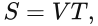
Here $S$ is displacement, $V$ is speed, and $T$ is elapsed time. If $V=1$ m/s and $T=10$ s, then $S=10$ m. A fixed input and fixed model give a single number.
Now let speed take three equally likely values:
| Speed | Probability | Displacement after 10 s |
|---|---|---|
| 0.9 m/s | 1/3 | 9 m |
| 1.0 m/s | 1/3 | 10 m |
| 1.1 m/s | 1/3 | 11 m |
We now describe possible outcomes together with their probabilities. Saying only “the mean displacement is ten metres” discards the possibility of deviations from ten.
1.3 What is uncertainty quantification?
Uncertainty quantification, or UQ, is a framework for identifying, describing, inferring, propagating, and evaluating uncertainty. Besides “What is the prediction?”, it asks which factors are uncertain, how they might vary, how they affect the result, and whether the uncertainty assessment is reliable.
Probability can describe both fluctuations across repeated experiments and limited knowledge about a fixed unknown quantity. A Bayesian distribution over network parameters need not mean that the actual weights fluctuate randomly in the physical world. It expresses our knowledge about them.
1.4 What is uncertainty propagation?
Propagation studies how uncertainty in inputs or parameters changes after passing through a model:
Speed distribution → model S = 10V → displacement distribution
Parameter distribution → model at a fixed input → predictive output distributionIf elapsed time becomes 20 s, the same speeds produce displacements of 18, 20, and 22 m. Speed itself has not become more uncertain; its effect has accumulated over a longer time. The second path, parameter uncertainty to output uncertainty, is especially important for this paper.
1.5 Why error and uncertainty differ
A prediction of 10 m and a true displacement of 12 m give an absolute error of $|10-12|=2$ m. Error compares a prediction with truth. When making the prediction, truth is often unavailable; an uncertainty estimate describes what remains unknown given current information.
Suppose three networks predict 9.9, 10.0, and 10.1 m. Their agreement can coexist with a true value of 12 m because they may share a bias. Small ensemble spread establishes agreement among members. Whether it represents the actual uncertainty requires evaluation.
1.6 Where uncertainty comes from
| Source | Example | Typical response |
|---|---|---|
| Aleatoric uncertainty | Measurement noise or disturbances still unpredictable given the modelled information | Describe their statistics and include them in prediction and decisions |
| Epistemic uncertainty | Limited data, uncertain parameters, unseen operating conditions | Gather representative information and improve inference |
| Model discrepancy | A constant-speed model for accelerating motion; omitted drag or coupling | Improve the model or represent discrepancy explicitly |
These are not three mutually exclusive categories. Model discrepancy often reflects limited knowledge and may also be modelled separately. The aleatoric/epistemic distinction depends on information and modelling choices. For example, some uncertainty attributed to unmeasured ocean currents could decrease once those currents are measured.
1.7 Connection to the paper
Section 2.2 treats input functions as given. Training outputs contain independent, zero-mean Gaussian noise with known standard deviation. The focus is DeepONet inference and predictive uncertainty from finite, noisy output data.
At one prediction task, all members receive the same input function and query location, but use different network parameters:
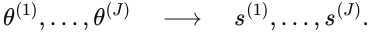
Figure 2.2 shows these networks and their output statistics. Having many input functions in the dataset does not mean that a single conditional prediction also samples uncertain inputs.
1.8 Self-check
- Does a tightly concentrated ensemble prove that its prediction is accurate?
- What process turns a speed distribution into a displacement distribution?
- What is propagated when different parameter vectors receive the same input?
Reference answers
- No. Members can share a bias or omit the same important physical mechanism.
- Uncertainty propagation, an important part of UQ.
- Network-parameter uncertainty is propagated into output-prediction uncertainty.
Completion criterion: explain in your own words why error requires a comparison with truth, while uncertainty describes what is unknown given available information.
Lecture 2: Describing an uncertain number
A one-minute experiment · 02 / 10
The average is five sweets. Is that the whole story?
Each dot is a bag of sweets. Three possible counts have equal chances. Move them apart and watch the average.
Guess first: is a bag with 1, 5, or 9 sweets harder to predict than one with 4, 5, or 6?
The average gives the centre; spread tells us how far outcomes can be from it. Reporting only the average leaves out the second part.
Take this with you: The average gives the centre; spread tells us how far outcomes can be from it. Reporting only the average leaves out the second part.
Connect the intuition to the theory
The equally likely counts are 5−d, 5, and 5+d. Mean = 5; standard deviation = d × √(2/3). This is the known distribution's standard deviation.
2.1 Random variables and distributions
A random variable has a value not yet specified, with possibilities described probabilistically. Uppercase $X$ denotes the variable; lowercase $x$ denotes a realization. A discrete distribution assigns probability to each possible value. A continuous density $p(x)$ instead gives probabilities through integration:
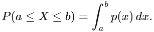
Area under a density is probability. A single point usually has probability zero for a continuous variable. A density value can exceed one without violating probability rules.
2.2 Expectation: one measure of the centre
For discrete and continuous variables respectively:
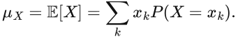
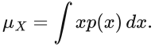
The displacement example has mean $(9+10+11)/3=10$ m. A mean need not be the most probable value or even a possible outcome: a variable taking 0 or 2 with equal probability has mean 1 but never takes that value.
2.3 Variance and standard deviation
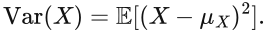
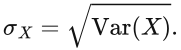
For the three equally likely displacements, variance is $[(-1)^2+0^2+1^2]/3=2/3$ m² and standard deviation is $\sqrt{2/3}\approx0.816$ m. Variance has squared units; standard deviation has the original units and is often easier to interpret.
2.4 Distribution variance versus sample variance
With only $J$ samples from an unknown distribution, the usual sample variance is:
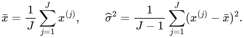
The $J-1$ denominator gives an unbiased population-variance estimate under conditions including independent, identically distributed observations with finite variance.
Thus 9, 10, and 11 have variance $2/3$ if they define a known, equally weighted distribution; treated as three observations used to estimate an unknown distribution, their sample variance is $2/(3-1)=1$. These answer different questions.
The paper uses $J-1$ for ensemble variance. Because EKI updates couple members, this denominator alone does not establish an unbiased estimate of the exact Bayesian posterior variance.
2.5 Gaussian distributions
We write $X\sim\mathcal N(\mu,\sigma^2)$, consistently using variance as the second parameter. Its density is:
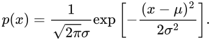
For instance, $V\sim\mathcal N(1,0.1^2)$ has mean speed 1 m/s and standard deviation 0.1 m/s. A Gaussian is symmetric, unimodal, and fully determined by its mean and variance.
If the variable really has the stated Gaussian distribution, the probability masses are approximately:
- 68.27% within $\mu\pm\sigma$.
- 95% within $\mu\pm1.96\sigma$.
- 95.45% within $\mu\pm2\sigma$.
A mean-plus-or-minus-two-standard-deviations band does not have approximately 95% probability for every distribution. Nonlinear propagation need not preserve Gaussianity.
2.6 Quantiles and three kinds of interval
The cumulative distribution function is $F(x)=P(X\leq x)$. For a continuous, appropriately strictly increasing CDF, $q_p=F^{-1}(p)$ is the $p$ quantile. An equal-tail 95% interval is $[q_{0.025},q_{0.975}]$.
For a skewed distribution this interval need not be centred on the mean. Its probability interpretation applies to the chosen distribution; whether that distribution fits the problem still needs checking.
| Interval | Typical target | Interpretation |
|---|---|---|
| Frequentist confidence interval | A fixed unknown parameter | Across repeated datasets, the interval procedure covers the fixed parameter at its stated rate |
| Bayesian credible interval | A parameter or latent quantity conditional on data | Posterior probability that the quantity lies in the interval |
| Prediction interval | An unobserved future quantity | Describes a future-value distribution; inclusion of observation noise depends on the target |
The paper calls mean ± 2 std a “confidence interval”. Read it first as a pointwise band formed from the ensemble mean and standard deviation. The name alone does not supply a strict 95% confidence guarantee.
2.7 Standard deviation versus standard error
More samples can improve estimation of a mean without narrowing the underlying distribution. For independent, identically distributed samples with finite variance, the standard error of the sample mean is approximately $\sigma/\sqrt J$. It describes uncertainty in estimating the mean. The distribution's standard deviation $\sigma$ describes variability of outcomes.
Dividing network-prediction standard deviation by $\sqrt J$ therefore does not produce an uncertainty band for the target output. Dependence among EKI members also requires scrutiny before applying independent-sample standard-error formulas.
2.8 Paper connection and calculation
Equations (2.21)–(2.22) collect $J$ outputs at a common input and query, then compute their mean and sample standard deviation. Equations (2.2)–(2.3) describe noisy training outputs through a Gaussian noise model and likelihood.
Three predictions 9, 10, and 11 m give mean 10 m, sample standard deviation 1 m, and the band $[8,12]$ m. These numbers compute the band; they do not prove 95% reliability.
2.9 Self-check
- If noise standard deviation is 0.2, what is its variance?
- Do equal means imply equal uncertainty?
- Must increasing an ensemble from 1,000 to 10,000 networks reduce output standard deviation by $1/\sqrt{10}$?
Reference answers
- Variance is $0.2^2=0.04$. Covariance diagonals normally contain variances.
- No. $\mathcal N(0,1)$ and $\mathcal N(0,100)$ have the same mean and very different spread.
- No. More members may improve approximation of distributional statistics; they do not shrink the target distribution at that rate. Standard deviation and standard error are different.
Completion criterion: compute a mean and sample standard deviation, and explain why interpreting a two-standard-deviation band depends on distributional assumptions and evaluation.
Lecture 3: Covariance, correlation, and random functions
A one-minute experiment · 03 / 10
Two steps: add up or cancel out?
Each step can be off by one metre left or right. Separately, the steps look identical. Their combined error depends on how they move together. Dashed: first step; solid: second step.
Guess first: if a left error is always followed by a right error, will the final position miss the start?
We need both the size of each error and how the errors vary together. Each row shows one equally likely case.
Take this with you: We need both the size of each error and how the errors vary together. Each row shows one equally likely case.
Connect the intuition to the theory
Var(X+Y) = Var(X) + Var(Y) + 2Cov(X,Y). Same-direction, independent, and opposite errors give total variances of 4, 2, and 0 square metres.
3.1 Are separate standard deviations enough?
Let $E_1,E_2$ be speed errors over two consecutive one-second intervals, so accumulated displacement error is $S=E_1+E_2$. Both errors have mean zero and variance one.
- If $E_2=E_1$, errors reinforce and $\operatorname{Var}(S)=4$.
- If they are independent, $\operatorname{Var}(S)=2$.
- If $E_2=-E_1$, they cancel and $\operatorname{Var}(S)=0$.
Identical pointwise means and variances can produce completely different propagated uncertainty. The missing information is dependence.
3.2 Covariance describes joint variation
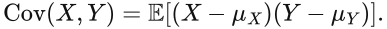
Positive covariance indicates a tendency to deviate in the same direction; negative covariance indicates opposite deviations. In particular:
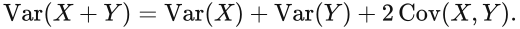
Correlation normalizes covariance by the two nonzero standard deviations:
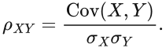
It lies in $[-1,1]$ and measures linear association. Independence implies zero covariance when the relevant moments exist, but the converse fails. For symmetric $X\sim\mathcal N(0,1)$ and $Y=X^2$, covariance is zero although $Y$ is completely determined by $X$.
3.3 Covariance matrices
For a random vector $\mathbf X=(X_1,\ldots,X_m)^\mathsf T$:
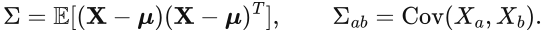
The diagonal contains variances; off-diagonal entries describe pairwise joint variation. A covariance matrix is symmetric and positive semidefinite: $v^\mathsf T\Sigma v\geq0$ for every vector $v$. The superscript $\mathsf T$ means transpose.
Sample cross-covariance has the form:
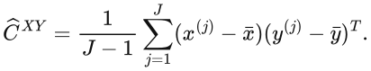
When one vector contains parameters and the other predicted observations, this becomes central to Kalman updates: it records how parameter changes co-vary with predicted-data changes.
3.4 A stochastic process is an uncertain function
A stochastic process $U(t)$ is a collection of random variables indexed by time or space. Fix $t$ and $U(t)$ is a random variable. Fix one realization and $u^{(j)}(t)$ is a whole sample curve.
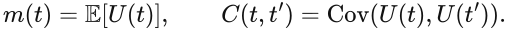
If displacement integrates speed, and the required interchange of integration and expectation is valid:
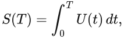
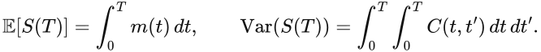
The variance of an accumulated output depends on covariances between all pairs of times. Pointwise standard deviations generally do not determine uncertainty of an entire trajectory.
3.5 Gaussian processes
A Gaussian process, $U\sim\mathcal{GP}(m,k)$, requires the function values at every finite set of locations to form a jointly Gaussian vector:
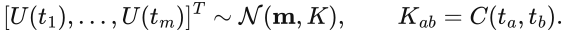
Gaussian marginal distributions at individual times alone are insufficient. The joint distributions must satisfy this condition.
The paper uses a squared-exponential covariance kernel:
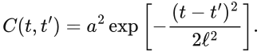
Here $a$ controls amplitude, with pointwise variance $a^2$, and $\ell$ controls the decay of correlation with distance. Larger $\ell$ usually gives more slowly varying sample curves. Even with unchanged pointwise variance, changing $\ell$ changes the variance after integration because it changes correlation.
3.6 Why independent samples cannot simply be joined into a curve
Independent draws at each time destroy the smooth, correlated structure of a target process. On a finite grid, build the joint covariance matrix $K$ and draw jointly. If $K=LL^\mathsf T$ and $z\sim\mathcal N(0,I)$:
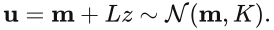
One can obtain $L$ with a Cholesky factorization. A small diagonal correction sometimes improves numerical stability, but also slightly changes the sampled covariance.
3.7 Connection to the paper
Section 3.1, Eqs. (3.7)–(3.8), generates input functions with a GP. The antiderivative example uses $a=1$, $\ell=0.2$, and 100 input sensors.
Here the GP generates curves with specified distributional and correlation structure. It does not replace DeepONet, nor does it establish that DeepONet outputs form a GP.
Distinguish generating many random input functions for operator training and testing from fixing one input and measuring prediction spread across parameter vectors. The reported ensemble prediction statistics mainly address the latter. Combining random inputs and uncertain parameters needs additional joint propagation.
3.8 Self-check
- Do equal standard deviations at two times determine the standard deviation of accumulated displacement?
- Does zero covariance imply independence?
- Does one GP draw give one number or one function?
Reference answers
- No. Their covariance is also needed.
- Generally no. Under joint Gaussianity, uncorrelated components are independent; without that condition the implication fails.
- Theoretically a sample function; a finite-grid implementation returns its jointly sampled values at several locations.
Completion criterion: explain how different correlation structures produce different trajectory uncertainty even when all pointwise standard deviations match.
Lecture 4: Propagating uncertainty through a model
A one-minute experiment · 04 / 10
Number beads go through a little machine
Five equally likely beads carry −2, −1, 0, 1, and 2. The machine can double or square each number.
Guess first: where do negative numbers go when squared? Is squaring the average the same as averaging the squares?
The machine maps each possible input to an output. Squaring sends positive and negative inputs to the same nonnegative value and changes the distribution's shape.
Take this with you: The machine maps each possible input to an output. Squaring sends positive and negative inputs to the same nonnegative value and changes the distribution's shape.
Connect the intuition to the theory
In general E[f(X)] ≠ f(E[X]). Here the input mean is 0, the mean squared output is 2, and the square of the input mean is 0.
4.1 The object being propagated is a distribution
For uncertain input $X$ and model $Y=f(X)$, propagation seeks the distribution of $Y$, or at least its moments, quantiles, and event probabilities. Knowing a mean does not tell us the probability of exceeding a safety threshold, such as $P(S>S_{\mathrm{safe}})$.
The output distribution is the pushforward of the input distribution. For any output event set $A$:
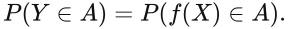
This requires neither Gaussian outputs nor an invertible model.
4.2 Exact moments for affine propagation
For $Y=aX+b$, with the required moments finite:
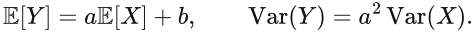
Variance is multiplied by $a^2$; standard deviation by $|a|$. These moment identities do not require Gaussian inputs. If the input is Gaussian, an affine transformation additionally preserves Gaussianity. Thus $V\sim\mathcal N(1,0.1^2)$ and $S=10V$ imply $S\sim\mathcal N(10,1)$.
For vectors:
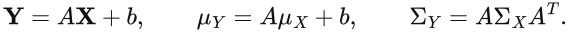
Off-diagonal covariances contribute through this expression and cannot be discarded arbitrarily.
4.3 Nonlinearity changes the story
In general, $\mathbb E[f(X)]\neq f(\mathbb E[X])$. For $X\sim\mathcal N(0,1)$ and $Y=X^2$, the mean is $\mathbb E[Y]=1$, while $f(\mathbb E[X])=0$. The output variance is 2.
The output is nonnegative and right-skewed, so it is not Gaussian. A mechanical band $1\pm2\sqrt2$ includes negative values that the output cannot take. Mean and variance do not fully describe distributional shape.
Likewise for a neural network:
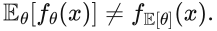
The paper averages predictions, rather than predicting with averaged parameters.
4.4 Monte Carlo propagation
- Draw $M$ input samples $x^{(1)},\ldots,x^{(M)}$.
- Run the model for each, obtaining $y^{(m)}=f(x^{(m)})$.
- Estimate output moments, quantiles, or event probabilities from those outputs.
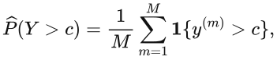
The indicator is one when its condition holds and zero otherwise. Monte Carlo applies broadly without requiring linearity, but repeated model evaluations can be expensive. Ordinary sampling can also struggle with rare events.
For independent samples and finite variance, the standard error of a mean estimate scales as $M^{-1/2}$. Halving that estimation error typically needs about four times as many samples. This reduces numerical sampling error, not the physical uncertainty itself.
Optional exercise: this standalone experiment is not the paper's DeepONet implementation.
import numpy as np
rng = np.random.default_rng(42)
sample_count = 100_000
v = rng.normal(loc=1.0, scale=0.1, size=sample_count)
s = 10.0 * v
print("Linear propagation: mean, std =", s.mean(), s.std(ddof=1))
x = rng.normal(loc=0.0, scale=1.0, size=sample_count)
y = x**2
print("Squared Gaussian: mean, variance =", y.mean(), y.var(ddof=1))
print("Equal-tail 95% interval =", np.quantile(y, [0.025, 0.975]))Expect mean and standard deviation near 10 and 1 for the first case, and mean and variance near 1 and 2 for the second. The squared-output quantile interval should be asymmetric and nonnegative.
4.5 First-order linearization
For a smooth function expanded around the input mean:
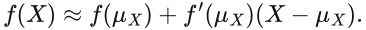
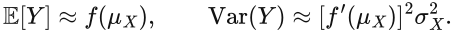
The vector version uses a Jacobian:
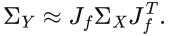
This may work for small uncertainty and locally nearly linear models. But for $f(X)=X^2$ at mean zero, the derivative is zero, so the approximation incorrectly gives zero output variance. This is a useful counterexample to blind linearization.
4.6 A map of other methods
| Method | Idea | Main caution |
|---|---|---|
| Analytical propagation | Derive output distributions or moments directly | Limited model classes; useful as benchmarks |
| Monte Carlo | Sample inputs and repeatedly solve the model | Solver cost, rare events, sampling error |
| Local expansions | Approximate the model to first or higher order | Strong nonlinearity, skewness, or multiple modes |
| Unscented transform | Propagate a few weighted representative points | Not a universally exact full-distribution solver |
| Polynomial chaos expansion, PCE | Expand the output in polynomial bases of random variables | Dimension, smoothness, input law, and truncation order matter |
For this paper, first master ensemble propagation; the other methods help place it in a wider landscape.
4.7 Propagation need not widen uncertainty
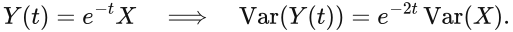
Accumulated errors can grow, but that is not a universal law. A stable contracting system can reduce initial-condition uncertainty. Dynamic output distributions depend on stability, disturbances, nonlinearity, and correlation.
4.8 Paper connection and self-check
Equations (2.21)–(2.22) propagate the parameter ensemble at fixed $u^\star,\xi^\star$. They share Monte Carlo's pattern of repeated forward evaluations followed by statistical summaries. However, EKI-generated members cannot simply be assumed to be independent exact posterior samples.
- If $X\sim\mathcal N(0,1)$ and $Y=X^2$, is the output mean zero?
- Does Gaussian input guarantee Gaussian output through a nonlinear model?
- Why can a network with mean parameters differ from the mean network prediction?
Reference answers
- No; its mean is one.
- No. Squaring a Gaussian is a counterexample.
- A nonlinear function generally does not commute with expectation.
Completion criterion: calculate affine propagation by hand and explain why nonlinear propagation usually needs sampling or approximation.
Lecture 5: From forward problems to Bayesian inverse problems
A one-minute experiment · 05 / 10
Find the treasure: learn from a new clue
You initially place the treasure near 4 m with a standard deviation of 2 m. A detector supplies a new reading. Taller curves support a location more; narrower curves describe a more concentrated guess.
Guess first: should a blurry new clue make us throw away everything we already thought?
Combine the original guess with the clue to make an updated guess. A clearer clue usually pulls the result closer and makes it narrower.
Take this with you: Combine the original guess with the clue to make an updated guess. A clearer clue usually pulls the result closer and makes it narrower.
Connect the intuition to the theory
For independent Gaussian models, posterior precision = prior precision + observation precision; precision is inverse variance. The dashed likelihood describes support for the reading, which is not assumed to be exact truth.
5.1 Forward and inverse problems
A forward problem computes outputs from parameters. An inverse problem infers parameters from observations. In a drag model $F=cv$, computing force from $c$ and speed is forward modelling; inferring $c$ from measured speed and force is inversion.

The operator $\mathcal H$ maps parameters into quantities comparable with observations; $R$ describes observation-error covariance. Here $\theta$ contains all DeepONet parameters and $\mathcal H(\theta)$ stacks network outputs at selected training inputs and query locations. Network training becomes a high-dimensional inverse problem.
5.2 Why a single optimum is insufficient
Finite noisy data can be explained reasonably well by several parameter vectors. A single best fit does not express this ambiguity. Bayesian inference retains their relative plausibility through a posterior distribution.
5.3 Prior, likelihood, and posterior
Prior $p(\theta)$: the parameter distribution before updating with the current data. It encodes existing knowledge, constraints, and modelling choices.
Likelihood $p(d\mid\theta)$: how compatible the observed data are with the observation model when parameters equal $\theta$. Used as a function of $\theta$, it is not itself a probability density over parameters.
Posterior $p(\theta\mid d)$: the parameter distribution after conditioning on the observations.
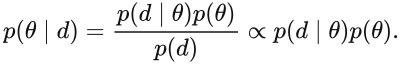
The symbol $\propto$ omits a normalization constant independent of $\theta$. The evidence $p(d)$ normalizes the posterior to integrate to one.
5.4 Gaussian likelihood and noise scale
For fixed $R$, a Gaussian likelihood takes the form:
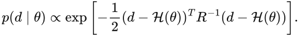
If $R=\sigma_{\mathrm{obs}}^2I$, squared residuals are weighted by $1/\sigma_{\mathrm{obs}}^2$. Accurate observations penalize the same residual more strongly; noisy observations tolerate it more.
Noise scale matters. Setting it artificially small can encourage fitting noise and yield misplaced certainty. This paper assumes the output-noise standard deviation is known; it does not solve identification of arbitrary unknown noise models.
5.5 A posterior you can calculate by hand
Let a scalar unknown have a Gaussian prior and an independent Gaussian observation error:
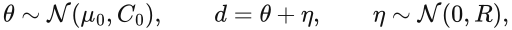
The posterior is Gaussian, with:
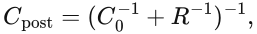
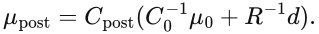
Inverse variance is called precision: smaller variance means larger weight. For $\mu_0=0$, $C_0=1$, $d=1$, and $R=0.25$:
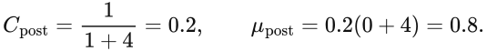
The posterior standard deviation is $\sqrt{0.2}\approx0.447$. Its centre is closer to the more precise observation and its distribution is narrower than the prior. This is also the simplest introduction to a Kalman update.
5.6 Maximum a posteriori estimation
For a Gaussian prior $\mathcal N(\mu_0,C_0)$, maximum a posteriori estimation, MAP, minimizes:
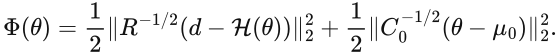
The Euclidean norm is $\|v\|_2=\sqrt{\sum_kv_k^2}$. One term fits data; the other penalizes departure from the prior. A zero-mean isotropic Gaussian weight prior connects to squared-norm regularization. But one optimum is only a posterior summary and does not determine its spread.
A standard Gaussian weight prior is also not neutral in function space: architecture and weight law together shape the functions the network tends to generate.
5.7 Identifiability
With $d=\theta_1+\theta_2+\eta$, data may constrain the sum without distinguishing its components. The posterior can exhibit strong parameter correlations; nonlinear problems can also have multiple modes. More repetitions of the same measurement type may not resolve ambiguity. Different excitation or observation types may be needed.
Neural networks additionally have parameter symmetries such as hidden-unit permutations. Different parameter vectors need not represent different predictive functions. Output uncertainty is often more directly useful than individual weight intervals.
5.8 Routes to posterior computation
| Method | Basic approach | Trade-off |
|---|---|---|
| Analytical inference | Derive the posterior directly | Usually simple or conjugate structures |
| MCMC, including HMC | Construct a sampling process with the target posterior as invariant law | Mixing, convergence diagnostics, and cost |
| Variational inference, VI | Optimize an approximation within a chosen distribution family | Family restrictions and optimization affect quality |
| Ensemble methods, including this EKI variant | Represent uncertainty by finitely many members and covariance updates | Efficiency and approximation quality both need evaluation |
These methods have different guarantees. Training several parameter vectors does not by itself produce independent exact posterior samples.
5.9 Paper connection and self-check
Read Eq. (2.3) for the likelihood, (2.4) for Bayes' rule, (2.5) for the observation model, and (2.6)–(2.7) for the posterior.
- Are $p(d\mid\theta)$ and $p(\theta\mid d)$ the same?
- Why is the worked posterior mean 0.8 rather than the simple average 0.5?
- Does finding a MAP estimate determine posterior variance?
Reference answers
- No. The posterior also uses the prior and normalization; the conditioning directions differ.
- Observation variance is smaller, so its precision and weight are larger.
- No. A single optimum does not describe the distribution's shape or spread.
Completion criterion: distinguish prior, likelihood, and posterior, and carry out the scalar Gaussian update independently.
Lecture 6: From parameter distributions to predictive distributions
A one-minute experiment · 06 / 10
An uncertain position and a wobbly ruler
Two diamonds show equally likely guesses about position. The ruler can wobble left or right independently, giving four equally likely possible readings, shown as circles.
Guess first: would a perfectly steady ruler remove all uncertainty about the position?
Uncertainty about position and fresh measurement wobble are separate. Predicting a true position and predicting a future reading can require different ranges.
Take this with you: Uncertainty about position and fresh measurement wobble are separate. Predicting a true position and predicting a future reading can require different ranges.
Connect the intuition to the theory
In this two-point example the independent errors have zero means: reading variance = position variance a² + measurement-noise variance b².
6.1 Define the prediction target first
At a new input $x^\star$, distinguish the latent model output $S^\star=f_\theta(x^\star)$ from a future observation $D^\star=f_\theta(x^\star)+\eta^\star$. Parameters are inferred from existing data; $\eta^\star$ is a new measurement error.
Their means may match while their variances differ. “Where is the vehicle really located?” and “What will the next sensor reading be?” therefore need not use the same interval.
6.2 Propagating the posterior
In principle, sample parameters from their posterior and evaluate the model:
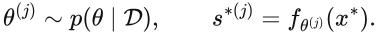
This is Lecture 4's propagation with a parameter posterior as the starting distribution. Future-observation prediction additionally uses the observation model:
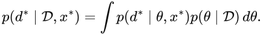
Integrating over parameters weights possible predictions by posterior plausibility rather than selecting one parameter vector.
6.3 The law of total variance
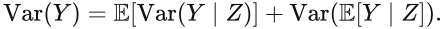
Read this as average within-group variability plus variability of group means. With independent, zero-mean future noise of known constant variance:
The two contributions are parameter-induced predictive spread and future measurement noise. If noise variance depends on inputs or parameters, its contribution must be the appropriate expected conditional variance, rather than a fixed constant.
This decomposition is model dependent. It does not automatically cover structural error, data bias, or omitted physics.
6.4 Continue the scalar example
Lecture 5 gave $\theta\mid d\sim\mathcal N(0.8,0.2)$. Predicting the latent quantity $S^\star=\theta$ gives mean 0.8 and variance 0.2. For a new independent observation with noise variance 0.25:
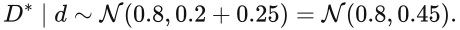
The latent standard deviation is about 0.447; the future-reading standard deviation is about 0.671. The extra measurement adds uncertainty.
6.5 What if the input is uncertain too?
An uncertain input $U$ must also be propagated:
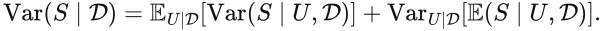
This separates output spread at a fixed input from variation in conditional means across inputs. Dependence between parameters and inputs requires the correct joint conditional distribution; independent sampling is not justified automatically.
A common implementation samples whole input functions in an outer loop and parameters or conditional outputs in an inner loop. Paired sampling from the appropriate joint law is also possible when independence assumptions are justified. Time-dependent inputs must preserve Lecture 3's correlation structure.
6.6 What the paper actually computes
Equations (2.21)–(2.22) summarize network outputs at fixed $u^\star,\xi^\star$:
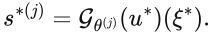
These formulas do not independently add a new output-layer measurement error. Section 3 evaluates coverage against clean numerical-solver outputs, rather than newly corrupted sensor readings.
The parameter ensemble is nevertheless influenced by the training-noise model, artificial perturbation $Q$, and validation-based adjustment. The authors adjust $Q$ by comparing validation residuals with ensemble spread. Consequently, its output standard deviation should not be described as a strict, complete separation of aleatoric and epistemic uncertainty.
It is an output-spread estimate, conditional on an input, produced by the chosen EKI inference and adjustment procedure. Its value is examined empirically on test data.
6.7 What can remain outside the model?
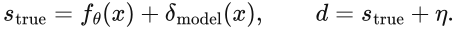
The discrepancy term represents a gap between model and reality. Setting it to zero does not ensure parameter uncertainty absorbs its effects. Networks sharing incorrect physics or lacking examples from a sea state can all be biased, however large the ensemble. Model-internal uncertainty need not equal all uncertainty in the real problem.
6.8 Self-check
- Why might intervals for true position and the next sensor reading differ?
- Model-output variance is 1 and independent zero-mean future-noise variance is 4. What is future-observation variance?
- Does evaluating different networks at a fixed input include randomness of that input?
Reference answers
- The next reading also includes future measurement noise. Other physical randomness in the true position depends on the model and target definition.
- Under the stated additive independent model, variance is $1+4=5$ and standard deviation is $\sqrt5$.
- No. Input randomness requires additional propagation over its distribution.
Completion criterion: on seeing an uncertainty band, first ask whether it concerns a latent output or a future observation and which quantities are held fixed.
Lecture 7: From ordinary functions to DeepONet
A one-minute experiment · 07 / 10
Turn a tap's curve into a bucket's curve
The top graph shows water entering each second. The bottom shows water collected so far. Change the flow pattern, then ask how much water is in the bucket at a chosen time.
Guess first: does a tap opening wider make the collected-water curve steeper? Is the final flow rate alone enough to know the total water?
A whole input process determines a whole output process: an operator. Branch reads the flow curve; Trunk receives the query time; together they predict the water collected.
Take this with you: A whole input process determines a whole output process: an operator. Branch reads the flow curve; Trunk receives the query time; together they predict the water collected.
Connect the intuition to the theory
This animation directly integrates s(t)=∫₀ᵗu(τ)dτ to provide the correct answer. DeepONet learns an approximation to such curve-to-curve mappings; no trained network runs here.
7.1 Regression versus operator learning
An ordinary function maps a number or vector to another number or vector, for example $y=2x$. An operator maps an entire function to another function. Consider the antiderivative:
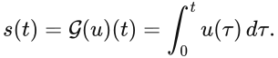
The input $u$ is a curve; output $s$ is another curve. Different input curves have different output curves. In dynamics, an input could be a forcing history and the output a response trajectory. If initial conditions also vary, they must be supplied as additional conditioning information; a model cannot distinguish initial states it never receives.
7.2 A hand-calculated example
For $u(t)=2+t$:
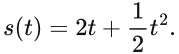
At $t=0.5$, $s(0.5)=1.125$, whereas the input value is $u(0.5)=2.5$. The network must learn how the input curve determines the output, not merely evaluate the input at the query.
7.3 Representing a function on a computer
Choose fixed sensor locations $x_1,\ldots,x_m$ and read:
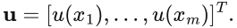
This is a finite sampled representation. Original DeepONet formulations typically keep sensor locations consistent across samples. Sparse sensors can make distinct functions look almost identical, limiting what the operator can learn.
7.4 Branch and Trunk
- The Branch network receives sampled input-function values and produces coefficients $b_1(\mathbf u),\ldots,b_r(\mathbf u)$.
- The Trunk network receives the query location $\xi$ and produces features $t_1(\xi),\ldots,t_r(\xi)$.
For a scalar output, they combine through a dot product:
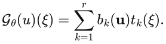
The internal feature dimension $r$ is neither the number of queries nor the ensemble size. Think of Trunk as providing learnable output-shape features and Branch as choosing their combination for a given input curve. Both networks train together; the features are generally not prescribed physical basis functions.
For trajectories, $\xi=t$; for a space-time field, $\xi=(x,t)$. The same network can evaluate different queries. A denser output grid does not automatically improve predictive accuracy.
7.5 Training data
Suppose $N$ input/output function pairs $(u_l,s_l)$ have outputs recorded at $P$ query locations:
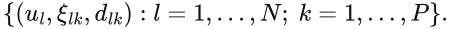
A deterministic DeepONet often minimizes mean squared error:
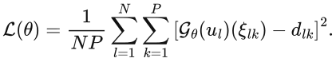
Distinguish $N$ function pairs from $NP$ scalar observations. Many points on one curve share one input function and are not equivalent to many independent operating conditions.
Splitting by whole input functions generally tests generalization to new functions better than randomly splitting points from the same curve across training and test sets. The paper allocates input/output function pairs to its different data pools.
7.6 What changes in Bayesian DeepONet?
The architecture can stay the same while a single parameter estimate is replaced by a distribution:
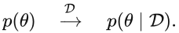
Different plausible parameters produce different predictions at fixed $u^\star,\xi^\star$:
Each member includes Branch and Trunk weights and biases. Repeating a deterministic network on identical inputs does not automatically produce useful UQ. Here EKI members interact through ensemble covariances and are jointly updated; this differs from training ordinary deep-ensemble members independently.
7.7 Network and data scales in this paper
Section 3 and Table 3.1 specify:
- Three hidden layers of 128 units for both Branch and Trunk, with output feature dimension 128.
- ReLU activation in Branch and Tanh in Trunk.
- 79,232 parameters for the antiderivative example and 79,360 for the other two.
- An ensemble of $J=5000$ members.
Each member therefore contains about 80,000 parameters, with 5,000 such vectors. “High dimensional” primarily refers to parameter inference, rather than physical-space dimension.
7.8 Paper connection and self-check
Read §2.1 and Fig. 2.1, identifying what each input arrow carries. Then read Fig. 2.2 to understand why several parameterized networks appear.
- Does Branch receive query times or sampled input-function values?
- Do 100 query locations require 100 separately trained DeepONets?
- Do $J=5000$ and feature dimension 128 measure the same thing?
Reference answers
- Branch receives function samples; Trunk receives the query location.
- No. One network can evaluate many queries.
- No. $J$ counts parameter members; 128 is an internal feature dimension of each network.
Completion criterion: sketch sampled input function → Branch, query location → Trunk, then dot product → output.
Lecture 8: Kalman updates and ensemble Kalman methods
A one-minute experiment · 08 / 10
Two reports: which should we trust more?
Your original estimate is 4 m with a standard deviation of 2 m. A sensor reports 8 m. Change the sensor's uncertainty and watch the updated estimate. Bars show one standard deviation on either side of each mean.
Guess first: as the sensor becomes less reliable, will the new estimate move toward 4 m or 8 m?
The update is a reasoned compromise: more reliable information receives more weight. It is not an unweighted average.
Take this with you: The update is a reasoned compromise: more reliable information receives more weight. It is not an unweighted average.
Connect the intuition to the theory
K = 4/(4+R); updated mean = 4 + K×(8−4), where R is the sensor-noise variance. Independent Gaussian errors and linear observations make this the same posterior calculation as Lecture 5.
8.1 Combining two imperfect sources
Your prior position estimate is zero with error variance one. A sensor reads one with noise variance 0.25. Lecture 5 gave an updated mean of 0.8:
The gain is $K=1/(1+0.25)=0.8$. The difference between actual and predicted observation is the innovation, or observation residual. The update reads: old estimate plus a reliability-weighted observation discrepancy.
8.2 Gain expresses relative reliability
A smaller $R$ gives a more reliable sensor and a larger move toward its reading. A smaller prior variance means the existing estimate is more concentrated and the same observation produces a smaller correction. Means alone do not determine this balance; error structure matters.
For this scalar example:
This is exact Bayesian inference for a Gaussian prior, linear observation model, and independent Gaussian noise. Similar expressions are generally approximations for nonlinear problems.
8.3 Vector update: how covariance carries information
Let the unknown vector $z$ have predicted mean $m$ and covariance $P$, and let:
Then:
The superscript $+$ denotes the updated quantity. Cross-covariance $PH^\mathsf T$ determines how an observation residual corrects each unknown component.
For example, a position observation can also update velocity when position and velocity are correlated in the predicted joint distribution. This information transfer rests on the joint model. Implementations usually solve a linear system rather than explicitly form an inverse.
8.4 Replacing covariance with an ensemble approximation
The ensemble Kalman filter, EnKF, represents unknown states or parameters using members $z^{(1)},\ldots,z^{(J)}$. Propagate each through the observation model, $h^{(j)}=h(z^{(j)})$, then compute:
The ensemble gain is:
Joint member variation supplies update directions without explicit derivatives of $h$. An insufficient ensemble can nevertheless give noisy covariances and spurious correlations.
8.5 A three-member calculation
Take $z=[0,1,2]$, observation model $h(z)=2z$, observed value $d=3$, and noise variance $R=1$. Predicted observations are $[0,2,4]$, with means $\bar z=1$ and $\bar h=2$.
The prediction is too small, so $z$ increases. Positive cross-covariance gives the expected direction. This calculation explains the gain's effect on the mean; it does not by itself specify a complete member-update scheme.
8.6 Why perturb observations?
One stochastic EnKF form is:
Artificial observation perturbations help this stochastic update preserve the intended covariance under suitable conditions. They do not provide $J$ new real measurements.
Pulling all members toward exactly the same observation without an appropriate deterministic ensemble transform can cause excessive shrinkage. Deterministic square-root EnKF alternatives avoid observation perturbations, so such perturbations are not mandatory for every EnKF.
Finite samples still have fluctuating perturbation means and covariances. Ensemble calculations are numerical approximations.
8.7 From filtering to inversion
Traditional filtering usually tracks a physical state through real time. EKI borrows the update mechanism to iteratively estimate model parameters. Distinguish physical time in filtering from algorithm iteration $i$ in this paper. Parameter-iteration perturbations are an artificial algorithmic construction.
8.8 Paper connection and self-check
Read sample covariances (2.13)–(2.15) before the update (2.12).
- What does Kalman gain do?
- In the three-member example, does increasing $R$ from 1 to 100 strengthen or weaken the update?
- Does “derivative free” mean no forward model evaluations are needed?
Reference answers
- It converts observation residuals into corrections of unknown quantities using their joint error structure.
- It weakens the update: $K=2/(4+100)$ is smaller than 0.4.
- No. Member predictions are still needed to build sample covariances.
Completion criterion: read the update as old estimate + gain × residual, and explain the role of cross-covariance.
Lecture 9: Understanding the paper's EKI–Bayesian DeepONet
A one-minute experiment · 09 / 10
A team of little models revises its guesses
Each dot is one model's parameter guess. Let them explore a little, make predictions, compare them with the same observation, then update together.
Guess first: if everyone agrees closely, does that prove they are right? Set exploration to zero and run several rounds.
One round: perturb parameters → predict → compare with data → update members. Each play runs one round; play again for the next.
Take this with you: One round: perturb parameters → predict → compare with data → update members. Each play runs one round; play again for the next.
Connect the intuition to the theory
This toy stochastic EKI uses h(θ)=2θ, observation d=6, and R=1. Q=q² is artificial parameter-perturbation variance. The paper replaces this simple model with DeepONet. A finite ensemble is not automatically an exact posterior sample.
9.1 Identify the inverse problem
Let $p$ denote parameter dimension and $n$ the number of selected scalar observations. Then $\theta\in\mathbb R^p$ and $d\in\mathbb R^n$:
The observation operator evaluates DeepONet at known input functions and query locations, stacking scalar outputs into a vector.
9.2 Artificial dynamics
The paper constructs:
This is an artificial state-space model. Index $i$ counts algorithm iterations. The covariance $Q_i$ perturbs parameters in the prediction step to maintain exploration and spread. Static unknown parameters in the original problem need not physically follow this random walk.
9.3 Four steps in one EKI iteration
Initialize $J$ parameter vectors; the experiments use standard Gaussian initialization:
Step 1: perturb the parameter ensemble.
Step 2: predict the current observations with every network.
Step 3: calculate means and covariances.
Step 4: correct parameters using observation residuals.
Here $d_i,R_i,\mathcal H_i$ refer to the same selected training minibatch. Those indices can be omitted for a full-data update. These expressions correspond to Eqs. (2.10)–(2.15) and Algorithm 1, with notation harmonized to distinguish prediction from analysis.
9.4 Check matrix dimensions
| Object | Shape | Meaning |
|---|---|---|
| $\theta^{(j)}$ | $p\times1$ | One network's parameters |
| $h^{(j)},d$ | $n\times1$ | Predicted and actual observations |
| $C^{\theta h}$ | $p\times n$ | Parameter–prediction cross-covariance |
| $C^{hh},R$ | $n\times n$ | Predicted-observation and observation-noise covariance |
| $K$ | $p\times n$ | Maps a residual to a parameter correction |
| $Q$ | $p\times p$ | Artificial parameter-perturbation covariance |
Thus $K(d-h)$ has shape $p\times1$. Ensemble anomaly-matrix products avoid storing a full dense parameter covariance. Isotropic $Q=\omega^2I_p$ can also be implemented directly with independent Gaussian parameter perturbations.
9.5 Keep R and Q distinct
| Matrix | Space | Source | Role |
|---|---|---|---|
| $R$ | Observation space | Training-output noise model | Weights residuals and controls trust in data |
| $Q$ | Parameter space | Artificial dynamics | Controls ensemble exploration and spread |
For input function $l$, the paper uses $R_l=\sigma_l^2I_P$, combining blocks into a block-diagonal matrix. Noise scales can differ across curves because output scales differ.
The English heading of §2.5 calls $Q$ “observation error covariance”, but the body and Eqs. (2.8), (2.10) define it as artificial-dynamics covariance. Observation error covariance is $R$. Follow the mathematical definitions when reading this heading.
9.6 Ensemble collapse and the role of Q
Members becoming nearly identical is ensemble collapse. It can restrict exploration and make output bands overconfident. Without artificial perturbations, typical linear-combination updates can confine members to the initial affine span, whose dimension is at most $J-1$. This need not represent every relevant high-dimensional uncertainty direction.
Perturbations can change that restriction, but introduce a tuning problem. Too little $Q$ can leave insufficient spread; too much can disrupt the mean fit and produce excessively wide bands. Appendix A compares fixed and adaptive choices.
9.7 Adaptive adjustment
The authors use:
This uses one perturbation scale for all parameter directions, rather than learning an arbitrary full covariance. On a dedicated validation pool, let $\mu_i^q$ be the predictive mean vector, $s_i^q$ the pointwise standard-deviation vector, and $d_i^q$ the observed vector:
Equation (2.25) compares ensemble-band scale with validation-residual scale. With nonzero denominator, negative values indicate insufficient relative spread and suggest increasing $\omega$; positive values suggest decreasing it.
The authors average this statistic over a recent window, denoted $\bar f_i$, and use Eq. (2.26):
The paper describes its window using $f_i,\ldots,f_{i-W_q}$; exact reproduction requires checking endpoint conventions and implementation.
The adjusted quantity is standard-deviation scale $\omega$, whereas covariance is $\omega^2I$. Multiplying $\omega$ by 1.01 multiplies covariance scale by $1.01^2$.
This validation-based heuristic seeks comparable residual and spread scales. Its formula alone proves neither posterior correctness nor calibrated intervals. With noisy validation observations, residuals include observation noise too.
9.8 Why minibatches?
With $N$ input functions and $P$ output points each, observation dimension is $NP$. Dense factorization at that dimension can be expensive, typically scaling cubically.
Each iteration selects $m_t=500$ scalar output observations, with matching $\mathcal H_i$ and $R_i$. This does not mean 500 whole functions or 500 ensemble members.
Training, adjustment of $Q$, and early stopping use separate pools, each supplying scalar-observation minibatches. Sampling without replacement refers to the relevant batch draw, not a rule that an observation can only be used once throughout training. Data are reused across iterations.
9.9 Why exact posterior sampling is not automatic
A single exact linear-Gaussian Kalman update has a clear Bayesian interpretation. This algorithm combines nonlinear networks, finite ensembles, repeated data use, artificial dynamics, minibatches, and adaptive perturbations.
Reusing an observation does not create independent new information. Repeatedly applying an update without appropriate design and analysis need not preserve the original static inverse problem's posterior.
Ask three separate questions: does the method fit a useful predictive mean; does its spread provide useful uncertainty information; and is the ensemble proved to represent a specified posterior exactly? Empirical support for the first two does not establish the third. The paper's numerical experiments mainly address the first two.
9.10 Early stopping
A separate data pool monitors a noise-weighted residual:
The residual is smoothed over the most recent $W$ iterations. Training stops after the best smoothed value has failed to improve for $K$ consecutive iterations; see §2.6 and Eqs. (2.28)–(2.29).
This accounts for minibatch fluctuations and held-out performance. It does not require training residuals to become zero.
9.11 Data allocation and hyperparameters
| Purpose | Input/output function pairs | Scalar observations per iteration |
|---|---|---|
| Parameter updates | 800 | $m_t=500$ |
| Adjustment of $Q$ | 100 | $m_q=500$ |
| Early stopping | 100 | $m_s=500$ |
| Independent test | 1,000 newly generated pairs | Final evaluation |
Section 3 gives $J=5000$, $\alpha=0.01$, threshold $\tau=0$, and stopping parameters $W=10$, $K=1000$. The main text reports initial perturbation standard-deviation scale $\omega_0=0.0001$.
Distinguish $\omega$ from $\omega^2$: appendix captions report an initial variance, which is not directly the same quantity as a main-text standard deviation. Exact reproduction should check code and settings before copying values into one variable.
These choices belong to the authors' tasks, architectures, and hardware. They are not universal optima. In particular, 5,000 members can impose substantial memory and forward-evaluation costs.
9.12 The algorithm in words
Initialize multiple DeepONet parameter vectors
→ draw a training-output minibatch
→ perturb each parameter vector
→ predict the batch with every network
→ update parameters using ensemble covariance and observation residuals
→ adjust Q on a separate pool; inspect smoothed stopping residuals
→ repeat until the stopping rule is met
Retain the final ensemble
→ at a new fixed input, compute output means, standard deviations, and pointwise bands9.13 Self-check
- In which spaces do $R$ and $Q$ act?
- Why is a larger artificial perturbation not always better?
- Why separate $Q$-adjustment data from final test data?
- If $p=80000$ and $n=500$, what is the gain's shape?
Reference answers
- $R$ acts in observation space; $Q$ acts in network-parameter space.
- Excessive perturbations can worsen the predictive mean and make bands too wide.
- Adjustment data already influence algorithm choices. Independent test data are needed to assess the resulting method.
- $80000\times500$. Multiplication by a $500\times1$ residual gives an $80000\times1$ correction.
Completion criterion: reconstruct the four update steps without consulting the paper and explain $R$, $Q$, minibatches, and early stopping.
Lecture 10: Evaluating uncertainty and reading the complete paper
A one-minute experiment · 10 / 10
An uncertainty band is like an umbrella
Each point is the true error of one prediction; the horizontal order represents 12 different cases. The green band is the allowed error range. Crosses mark points outside it.
Guess first: could a very wide umbrella catch every point? Why not always draw the widest possible band?
A narrow range misses outcomes; an enormous one says little about where they will be. Assess coverage, width, and prediction error together.
Take this with you: A narrow range misses outcomes; an enormous one says little about where they will be. Assess coverage, width, and prediction error together.
Connect the intuition to the theory
Coverage = points inside / total points. These 12 fixed examples illustrate a tradeoff. Real evaluation requires data not used for tuning and checks at multiple nominal levels; this picture does not establish a 95% guarantee.
10.1 Why a shaded band is insufficient
An extremely wide band can contain every true value yet offer little decision value. A narrow band can look precise while regularly missing truth. UQ evaluation therefore needs predictive accuracy, spread, and observed coverage, together with operating conditions, nominal probability levels, and intended use.
10.2 The paper's three main metrics
For test input $l$, let $s_l$ contain true values at $P$ query points, $\mu_l$ the ensemble means, and $\sigma_l$ the pointwise standard deviations.
Relative error, Eq. (3.1):
This measures how far the predicted mean curve is from truth.
Uncertainty metric, Eq. (3.2):
This measures the overall magnitude of the standard-deviation vector relative to the true curve's scale. It is neither the arithmetic mean of standard deviations nor the prediction error.
Pointwise coverage of the two-standard-deviation band, Eq. (3.3):
Averaging these per-curve metrics over $N_t$ test curves gives $e_t,q_t,c_t$, as in Eq. (3.4). A nearly zero true-output norm can make relative metrics unstable. Also inspect absolute errors and results grouped by output scale.
10.3 A four-point exercise
Use truth $[0,1,2,3]$, mean $[0.1,0.8,2.2,2.5]$, and standard deviations $[0.1,0.1,0.2,0.1]$.
| Query | Truth | Mean ± 2 std | Covered? |
|---|---|---|---|
| 1 | 0 | [-0.1, 0.3] | Yes |
| 2 | 1 | [0.6, 1.0] | Yes, at the boundary |
| 3 | 2 | [1.8, 2.6] | Yes |
| 4 | 3 | [2.3, 2.7] | No |
Coverage is $3/4=75\%$, with:
Here overall spread is smaller than mean error and the last interval is clearly too narrow. Four points alone cannot establish the method's general performance.
10.4 Higher coverage is not always better
Multiplying every standard deviation by 100 can drive coverage toward 100% while making intervals too wide to distinguish safe from unsafe outcomes.
For intervals explicitly assigned a 95% nominal level, we generally seek coverage near 95% under the relevant data distribution, with informative widths. Severe undercoverage suggests overconfidence; severe overcoverage can suggest excessive conservatism. Finite test-sample variation also matters.
This paper mainly reports one mean ± 2 std level without establishing Gaussian outputs. Therefore 95.45% is not an already-proved theoretical coverage target for its ensemble bands.
10.5 Pointwise versus whole-curve coverage
The paper's $c_l$ is the fraction of covered query points on a curve, averaged across curves. It is not the probability that an entire curve lies inside the band:
As an illustration only, if coverage events at 100 points were independent and each had probability 0.95, all-point coverage would be $0.95^{100}\approx0.006$. Actual curves are generally correlated, so this number cannot be transferred directly. It shows that these are distinct targets.
Even coverage at every discrete query does not guarantee coverage between queries. Trajectory-safety applications need joint distributions, simultaneous bands, or path-event probabilities. A pointwise band alone does not certify trajectory safety.
10.6 Calibration
Calibration asks whether stated probability levels match observed frequencies under the relevant repeated tests.
- Construct intervals at several nominal levels on independent test data, for example 50%, 80%, 90%, and 95%.
- Measure observed coverage at each level.
- Compare nominal and empirical coverage.
- Also track widths, absolute errors, and performance across conditions.
Good aggregate coverage can hide poor coverage in a subgroup, such as high-speed operation. Calibration must also refer to a defined target: noisy future readings and clean latent outputs are different targets.
10.7 What does positive error–uncertainty correlation show?
The paper plots $e_l$ against $q_l$ across test functions. Larger uncertainty on larger-error examples can make uncertainty useful for flagging difficult cases. Correlation alone does not establish probability calibration or posterior correctness.
Both metrics also share the denominator $\|s_l\|_2$. Small true-output scale can inflate both. Check absolute quantities, scale groups, and other evidence before attributing all correlation to successful uncertainty detection.
10.8 Further scoring methods
If a model provides a defensible predictive density, distributional scoring rules can evaluate it. For a Gaussian predictive model, negative log likelihood for truth $s$ is:
Large errors paired with tiny claimed variance are penalized, while arbitrarily inflating variance also has a cost. Applying this formula assumes a reasonable Gaussian density; two ensemble moments alone do not validate that assumption.
Further directions include CRPS, interval scores, and Brier scores for event probabilities. Their shared aim is to reward accurate predictions that express uncertainty honestly.
10.9 The three benchmark operators
Antiderivative, §3.1:
This builds function-to-function intuition. GP-generated inputs and numerical outputs support experiments with noisy training data.
Reaction–diffusion equation, §3.2:
It uses zero initial conditions and zero boundary values at both ends. Input is a spatial function $u(x)$; output is a space-time field $s(x,t)$ queried at $(x,t)$. This introduces spatial coupling and a nonlinear term.
Gravity pendulum, §3.3:
With specified initial conditions, forcing $u(t)$ determines response $s(t)$. The sine term introduces nonlinearity. Reproduction must check initial conditions: the differential equation alone does not uniquely define its solution.
Antiderivative and pendulum outputs are sampled at 100 locations or times; reaction–diffusion uses a $100\times100$ space-time grid. The latter two examples also use the corresponding GP input-generation procedure.
10.10 Reading the reported results
The following values come from Tables 3.2–3.7. Training noise of 1% or 5% means noise standard deviation relative to the corresponding output function's maximum absolute value. All three metrics are averages over the test set.
| Benchmark | Training-output noise | Mean relative error $e_t$ | Mean uncertainty $q_t$ | Pointwise coverage $c_t$ |
|---|---|---|---|---|
| Antiderivative | 1% | 0.009 | 0.014 | 98.5% |
| Antiderivative | 5% | 0.027 | 0.070 | 99.7% |
| Reaction–diffusion | 1% | 0.016 | 0.030 | 99.3% |
| Reaction–diffusion | 5% | 0.051 | 0.084 | 99.3% |
| Pendulum | 1% | 0.008 | 0.025 | 99.9% |
| Pendulum | 5% | 0.019 | 0.036 | 96.8% |
Across these benchmarks, greater training noise increases mean error and ensemble spread. Coverage is high in all six settings, with several appearing conservative. Comparable error/spread scales and positive association support the potential of spread as an error indicator.
These results do not by themselves establish an exact Bayesian posterior predictive distribution, equivalent performance for arbitrary physical systems or unknown noise, successful propagation of noisy inputs, or reliability outside the data distribution. Nor do they prove trajectory safety or optimal speed and calibration against every alternative.
Section 4 notes memory limitations when larger networks require larger ensembles, and discusses directions such as dimensionality reduction and localization.
10.11 Questions before transferring the method to vehicle prediction
| Question | Why it matters |
|---|---|
| Is the input forcing, control, current, or state history? | Defines the learned operator |
| What is uncertain in initial state, physical parameters, and inputs? | Defines the distributions to propagate |
| Is the band for a true state or a noisy reading? | Defines the evaluation target and noise treatment |
| How is forcing's temporal correlation represented? | Changes integrated trajectory spread |
| Does testing include entirely new operating conditions or trajectories? | Determines whether generalization is tested |
| Is the objective a pointwise error or a whole-path exceedance event? | Determines whether pointwise bands suffice |
| What happens after sea state or control policy changes? | Raises distribution-shift and model-mismatch questions |
These questions define a research problem; the paper has not answered all of them.
10.12 Explain the paper in five minutes
- Problem: predict with DeepONet and estimate uncertainty from finite noisy outputs.
- Model: parameter prior, Gaussian observation likelihood, and a network-based observation operator.
- Inference: parameter ensemble, artificial perturbations, sample covariances, and Kalman updates.
- Practical choices: minibatches, separate data for adjusting $Q$, and smoothed-residual early stopping.
- Prediction: hold a new input fixed and summarize all network outputs.
- Evaluation: three benchmarks, two noise levels, error/spread/coverage metrics.
- Judgment: empirically useful uncertainty estimates still require further justification for exact posterior interpretation or safety guarantees.
10.13 Self-check
- Does tenfold interval inflation prove better UQ when coverage increases?
- Is 99% pointwise coverage the same as 99% whole-trajectory coverage?
- Does strong error–standard-deviation correlation prove calibration?
- Does final testing mainly use clean solver outputs or newly noisy observations?
Reference answers
- No. Width, nominal levels, application value, and suitable scores also matter.
- No. Whole-trajectory coverage is a different joint event.
- No. Ranking and correlation differ from correct probability levels; shared normalization can also affect correlation.
- Clean numerical-solver outputs are the principal test truth; training outputs are corrupted by noise.
Completion criterion: state the paper's claims accurately and distinguish what its experiments support from what they have not established.
Appendix A: Terminology at a glance
| Term | Meaning in this course |
|---|---|
| UQ | Identifying, describing, inferring, propagating, and evaluating uncertainty |
| Uncertainty propagation | Mapping an input or parameter distribution through a model |
| Aleatoric uncertainty | Random variation remaining given the modelled information |
| Epistemic uncertainty | Uncertainty due to limited knowledge, data, or understanding |
| Model discrepancy | A difference between the adopted model and the real mechanism |
| Random variable | A quantity whose possible values are described probabilistically |
| A density whose integral over a region gives probability | |
| CDF | Probability that a variable does not exceed a specified value |
| Quantile | A value corresponding to a cumulative probability level |
| Covariance | The joint-deviation structure of two quantities |
| GP | A process with jointly Gaussian values at every finite set of locations |
| Kernel | Here, the GP covariance function between locations |
| Prior | Parameter distribution before conditioning on the current data |
| Likelihood | Compatibility of observed data with a model at specified parameters |
| Posterior | Parameter distribution conditional on observations |
| MAP | A point maximizing posterior density |
| Posterior predictive | An output or observation distribution weighted over the posterior |
| Monte Carlo | Using random samples to approximate integrals and statistics |
| Operator learning | Learning mappings from functions to functions |
| DeepONet | An operator-learning network combining Branch and Trunk |
| Branch / Trunk | Networks encoding the input function and query location |
| Ensemble | A finite collection representing states or parameters |
| EnKF | Ensemble-based covariance estimation and Kalman updating |
| EKI | Iterative parameter inference using ensemble Kalman ideas |
| Innovation | Difference between actual and predicted observations |
| Ensemble collapse | Members becoming too similar and losing spread |
| Coverage | Fraction of evaluation targets falling within stated intervals |
| Calibration | Agreement between claimed probability levels and observed frequencies |
| Sharpness | Concentration of a predictive distribution, considered alongside calibration |
| OOD | Inputs or conditions outside the relevant training/validation distribution |
| Minibatch | A subset of observations used in one update |
| Early stopping | Terminating iterations using held-out performance or related criteria |
Appendix B: Key formulas and where to find them
| Formula or object | Course | Paper |
|---|---|---|
| $s=\mathcal G(u)$ and DeepONet dot product | Lecture 7 | §2.1, Eq. (2.1), Fig. 2.1 |
| Additive Gaussian output noise | Lectures 1, 5 | Eq. (2.2) |
| Likelihood and Bayes' rule | Lecture 5 | Eqs. (2.3)–(2.4) |
| $d=\mathcal H(\theta)+\eta$ | Lectures 5, 9 | Eq. (2.5) |
| Posterior with Gaussian prior | Lecture 5 | Eqs. (2.6)–(2.7) |
| Artificial parameter dynamics | Lecture 9 | Eqs. (2.8)–(2.10) |
| Predicted observations and ensemble update | Lectures 8, 9 | Eqs. (2.11)–(2.15), Algorithm 1 |
| DeepONet observation vector and noise matrix | Lecture 9 | Eqs. (2.16)–(2.20) |
| Ensemble output mean and standard deviation | Lectures 2, 6 | Eqs. (2.21)–(2.22), Fig. 2.2 |
| Validation statistic for adjusting $Q$ | Lecture 9 | Eqs. (2.23)–(2.26) |
| Residual smoothing and stopping | Lecture 9 | Eqs. (2.27)–(2.29) |
| Error, spread, and coverage metrics | Lecture 10 | Eqs. (3.1)–(3.4) |
| Antiderivative and GP inputs | Lectures 3, 7, 10 | Eqs. (3.5)–(3.8) |
| Reaction–diffusion equation | Lecture 10 | Eqs. (3.9)–(3.12) |
| Gravity pendulum | Lecture 10 | Eq. (3.13) |
| Effects of $Q$ on width and mean | Lecture 9 | Appendix A, Fig. A.1 |
Affine propagation, total variance, the scalar Gaussian posterior, and distinctions among interval types are background added for learning. This table does not imply that the paper derives every one of these foundations.
Appendix C: Ten common misconceptions
- “Error is uncertainty.” Error compares a prediction with truth; uncertainty describes what remains unknown given information.
- “Gaussian inputs stay Gaussian through any model.” Nonlinear transformations generally change distributional shape.
- “Pointwise standard deviations are enough.” Trajectory propagation usually also requires temporal dependence.
- “More members shrink physical uncertainty by $1/\sqrt J$.” This confuses distributional spread with mean-estimation error.
- “An ensemble is exact Bayesian sampling.” Construction, updates, and theoretical conditions determine the interpretation.
- “R and Q are interchangeable noise matrices.” They act in different spaces and have different meanings and roles.
- “Larger Q prevents mistakes.” Strong perturbations can worsen the mean fit and make bands uninformative.
- “Mean ± 2 std is necessarily a 95% interval.” That requires distributional assumptions, good estimation, and evaluation.
- “Higher coverage is always better.” Very wide intervals achieve high coverage easily while saying little.
- “Good pointwise coverage guarantees safe trajectories.” Path events need joint analysis; closed-loop control adds further issues.
Appendix D: A suggested order for reading the paper
You need not read every page sequentially on your first pass.
- Read the abstract and Fig. 2.2 to identify the problem and final output.
- Complete Lectures 1–3 on distributions, standard deviations, covariance, and GP.
- Complete Lectures 4–6; read §2.2 and separate posterior inference from prediction.
- Complete Lecture 7; read §2.1 and Fig. 2.1 to identify inputs and outputs.
- Complete Lectures 8–9; read §§2.3–2.6 and write one EKI iteration by hand.
- Complete Lecture 10; read §3's metrics and three experimental examples.
- Revisit Appendix A and §4 for sensitivity to $Q$ and scaling limits.
- Finally read the related-work discussion and distinguish HMC, VI, deep ensembles, and EKI.
A study-note template
Date:
Lecture:
Three concepts I can explain in my own words:
1.
2.
3.
One example I can calculate independently:
How this lecture connects to the paper:
One question I still cannot answer:
What to review before the next session:Five questions after completing the course
- Given an input distribution and a dynamical model, how would you construct an output distribution, and why preserve input correlation?
- How do a prior and likelihood determine a parameter posterior from finite noisy data?
- Why can latent-output and future-observation predictive variances differ?
- How does EKI update DeepONet parameters using ensemble covariance, and what do $Q$ and $R$ do?
- How would independent data distinguish an accurate mean, a useful error indicator, calibrated probabilities, and a justified path-safety claim?
Answering these independently provides a foundation for deeper research.
Appendix E: Further reading
These are directions for study after the ten lectures, rather than prerequisites.
- Probability and statistics: Larry Wasserman, All of Statistics, for distributions, estimation, and inference.
- Uncertainty quantification: Ralph C. Smith, Uncertainty Quantification: Theory, Implementation, and Applications, for propagation, sampling, and numerical methods.
- Bayesian inverse problems: Andrew M. Stuart, Inverse problems: A Bayesian perspective (2010), for a more advanced theoretical treatment.
- Kalman methods and filtering: Simo Särkkä and Lennart Svensson, Bayesian Filtering and Smoothing, second edition, for filtering, approximate updates, and nonlinear problems.
- Foundational EKI research: Iglesias, Law, and Stuart, Ensemble Kalman methods for inverse problems (2013), reference [15] in the paper; and Kovachki and Stuart, Ensemble Kalman inversion: a derivative-free technique for machine learning tasks (2019), reference [19].
- DeepONet: Lu et al., Learning nonlinear operators via DeepONet based on the universal approximation theorem of operators (2021), reference [25].
- Directly related methods: the EKI-B-PINN study in reference [30] and the randomized-prior DeepONet UQ study in reference [35] of the main paper.